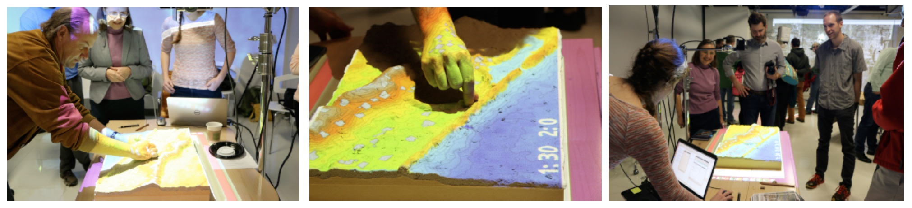
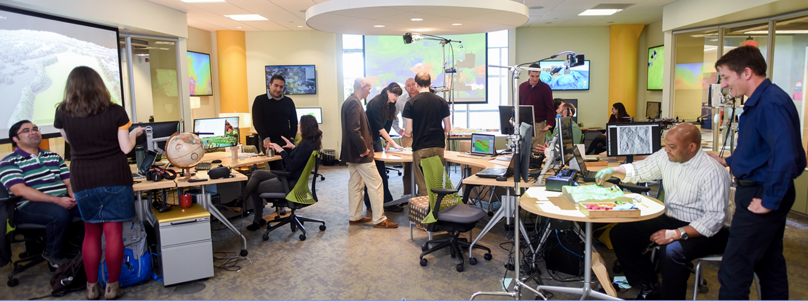

Smart and Connected Communities Projects
Helena Mitasova and Ross Meentemeyer


A. Petrasova, V. Petras, P. Tabrizian, J. Jeziorska


Outline
- Smart and Connected Communities RCN with TomorrowNow serious game
- InVision Raleigh - Next generation cities (covered by Jim)
- Rapid 3DGIS updates with UAS (main focus)
- Street level stormwater runoff and flooding
- Viewscapes analysis and Vegetation structure
- Urban growth simulations with FUTURES model
- Pedestrian movement pattern from webcams
Smart and Connected Communities RCN
Research coordination network to support"Smart civic engagement in rapidly urbanizing regions"
- Lead: NCSU, co-PIs from UNC-CH, NCCU
- Partners: cities and towns in the Triangle region
- Workshops to design an on-nline engagement system (i.e., a serious game) to support urban planning and resource management

InVision Raleigh
Next generation cities project, developed by Makiko Shukunobe with Dr. Baran serving as PIESRI award
Presented by Jim
Updating lidar DSM using UAS based SfM
Open source application for processing of UAS acquired imagery into DSM and fusion/update of existing lidar-based DSM to support planning with InVision Raleigh, storm water management and other activities
2015 lidar updated with 2018 UAS data: forested area is replaced by a new school in Apex

Updating lidar DSM using UAS based SfM
2015 lidar updated with 2018 UAS data for area on Centennial Campus hwere 2 new buildings were built, trees cut and stormwater control is being updated

2015 lidar, UAS-based DSm inserted, tilt identified and corrected
High resolution water flow
Street level modeling of surface runoff: lidar-based DEM and shallow water flow simulation using SIMWE model

 Water depth over orthophoto and zoom-in image with property boundaries and storm water infrastructure
Water depth over orthophoto and zoom-in image with property boundaries and storm water infrastructure
Urban growth simulations with FUTURES model
Open source model in GRASS GIS - paper Ashvin award winning version with web-based computer steering ACM SIGSPATIAL award, ESRI awardIndividual tree detection from lidar
Geomorphons (Jasiewicz, Stepinski 2013) applied to vegetation surface: peaks represent individual trees. Detected trees are replaced by modeled trunks to improve accuracy of viewscape analysis (Tabrizian et al. 2018)

Beyond bare earth surface: vegetation voxel models
Generalized Fragmentation Index derived from 3D grid point counts: vertical slice of raw point cloud and slice of fragmentation index 3D raster 
Beyond bare earth surface: vegetation voxel models
Slicing through fragmentation index 3D raster  Petras, V., D. J. Newcomb, and H. Mitasova. 2017. Generalized 3D fragmentation index derived from lidar point clouds. In: Open Geospatial Data, Software and Standards 2(9). DOI 10.1186/s40965-017-0021-8
Petras, V., D. J. Newcomb, and H. Mitasova. 2017. Generalized 3D fragmentation index derived from lidar point clouds. In: Open Geospatial Data, Software and Standards 2(9). DOI 10.1186/s40965-017-0021-8
Beyond bare earth surface: urban topography
Solar irradiation during summer solstice at NCSU Centennial Campus 
Mapping pedestrian density from webcams
Georeferencing location of pedestrians from public webcams
Petrasova A., Hipp J. A., Mitasova H., Visualization and analysis of active transportation patterns derived from public webcams. FOSS4G 2017 - Boston, August 2017.
Space-time cube visualization of pedestrian density
Time series of predestrian locations is transformed into continuous space-time model using kernel density function

Selected density value visualized as isosurface in space-time cube
Change in pedestrian density (2014 minus 2012)
Positive values ~ increase in density in 2014, Negative values ~ decrease in density in 2014
Tangible interface for surface analysis and process modeling
Tangible Landscape
Bringing people together around GIS: Tangible user interface for GRASS GIS
Designed to make working with geospatial data and simulations engaging, and fun

Petrasova, A. et al. (2018). Tangible Modeling with Open Source GIS. Second edition. Springer International Publishing. https://doi.org/10.1007/978-3-319-89303-7
How does it work?

Tangible Landscape couples a digital and a physical model through a continuous cycle of 3D scanning, geospatial modeling, and projection
Interactions

Coupling with 3D rendering

Design scenario analysis

Tangible Landscape for communities
Platform for decision-making and science communication where people of different backgrounds can interact.

Tangible Landscape website:
tangible-landscape.github.io
TL wiki: github.com/tangible-landscape/grass-tangible-landscape/wiki
Open Science
Developing open source software and contributing to OSGeo projects:
GRASS GIS https://grass.osgeo.org/
Tangible Landscape tangible-landscape.github.io
Open access educational material:
NCSU GeoForAll Lab Courses and Workshops https://geospatial.ncsu.edu/geoforall/courses.html

Summary
USIgnite
Closely related
Other
Thank You!
Thank you all for your contributions to the field - data, methods, algorithms and tools, that helped to bring the discipline to its current thriving state